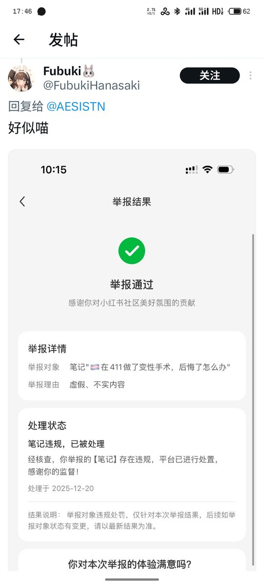

時璃風医詩🌈🏳️🌈
@hagishigure
這人能把我ban了能是什么懂醫學的人嗎。一看就是那種別人説10mg注射會導致E2過高會導致負面效果就拿自己是跨子的符號去反過來批判科學是錯的。

未命名符
@AESISTN
411小团体发力了。人家刚说完一直在被小团体攻击所以不敢说话。
411小团体就蹦出来跳脚展示
唉411唉小团体唉华为唉种🌸
骂不得，骂了就是反🌸势力 https://t.co/f5RNJqrt1L